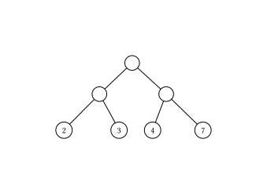
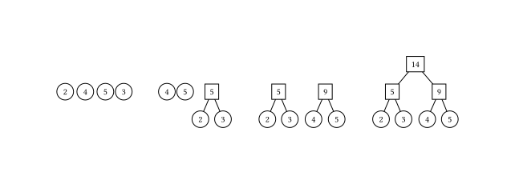
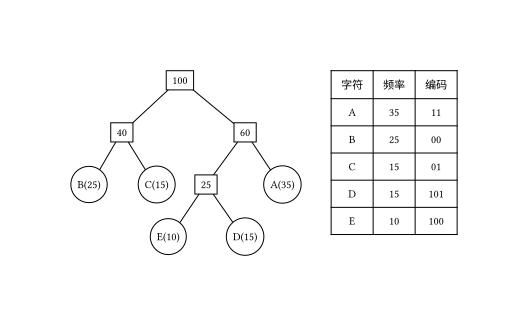

OI Wiki · prijevod · Strukture podatakaOI Wiki · translation · Data structures
Huffmanovo stabloHuffman tree
Sadržaj
Težinska duljina puteva stabla
Neka binarno stablo ima \(n\) težinskih listova. Zbroj umnožaka duljine puta od korijena do svakog lista i težine tog lista naziva se težinska duljina puteva stabla (Weighted Path Length of Tree, WPL).
Neka je \(w_i\) težina \(i\)-tog lista binarnog stabla, a \(l_i\) duljina puta od korijena do \(i\)-tog lista; tada se WPL računa formulom:

Za stablo na slici izračun WPL-a i rezultat glase:
Struktura
Za zadani skup listova s određenim težinama mogu se izgraditi različita binarna stabla; ono binarno stablo s najmanjim WPL-om naziva se Huffmanovo stablo (Huffman tree).
U Huffmanovu stablu listovi manje težine dalje su od korijena, a listovi veće težine bliže su korijenu; osim toga, samo listovi imaju stupanj \(0\), dok svi ostali čvorovi imaju stupanj \(2\).
Huffmanov algoritam
Huffmanov algoritam služi za izgradnju Huffmanova stabla, a koraci su sljedeći:
- Inicijalizacija: od zadanih \(n\) težina izgradimo \(n\) binarnih stabala koja se sastoje samo od korijena i tako dobijemo skup binarnih stabala \(F\).
- Odabir i spajanje: iz skupa \(F\) odaberemo dva stabla s najmanjim težinama korijena i od njih kao lijevog i desnog podstabla izgradimo novo binarno stablo; težina korijena novog stabla jednaka je zbroju težina korijena lijevog i desnog podstabla.
- Brisanje i dodavanje: iz \(F\) izbrišemo dva stabla koja su postala lijevo i desno podstablo, a novoizgrađeno stablo dodamo u \(F\).
- Ponavljamo korake 2 i 3; kad u skupu ostane samo jedno binarno stablo, to je stablo Huffmanovo.

Dokaz ispravnosti
Lema
U optimalnom stablu prefiksnog koda (Huffmanovu stablu) dva lista najmanje težine uvijek su najdublji listovi, a njihovo premještanje tako da postanu braća ne narušava optimalnost stabla koda.
Dokaz
Tvrdnju dokazujemo kontradikcijom. Pretpostavimo da u nekom optimalnom stablu prefiksnog koda postoje dva lista najmanje težine koja nisu najdublji listovi. Označimo ih s \(a\) i \(b\); njihova je dubina manja od dubine nekog najdubljeg lista. Za taj najdublji list \(c\) možemo zamijeniti položaje \(a\) i \(c\) ili položaje \(b\) i \(c\). Budući da Huffmanov algoritam na svakoj razini spaja listove najmanje težine, nakon zamjene težinska duljina puteva (WPL) stabla se smanjuje. Time dobivamo kontradikciju, pa pretpostavka ne vrijedi; dakle, dva lista najmanje težine moraju biti najdublji listovi.
Zatim pretpostavimo da su ta dva lista najmanje težine \(a\) i \(b\) i da su iste dubine. Ako u optimalnom stablu prefiksnog koda ta dva čvora nisu braća, pretpostavimo da postoje drugi čvorovi \(c\) i \(d\) koji su braća od \(a\) odnosno \(b\) (recimo da su \(a\) i \(c\) braća te \(b\) i \(d\) braća). Čvorove \(a\) i \(b\) možemo spojiti u jedno podstablo.
- Ako je zbroj težina \(a\) i \(b\) manji od težine \(c\) ili \(d\), spojeno podstablo možemo spojiti s čvorom veće težine (npr. \(c\) ili \(d\)) u novo podstablo, pri čemu se WPL smanjuje.
- Ako zbroj težina \(a\) i \(b\) nije manji od težina \(c\) i \(d\), možemo izravno premjestiti \(a\) i \(b\) tako da budu braća, a \(c\) i \(d\) učiniti drugim parom braće; WPL se pri tome ne povećava.
Dakle, takvim premještanjem optimalnost se ne narušava, što je i trebalo dokazati.
Teorem
Stablo prefiksnog koda dobiveno Huffmanovim algoritmom optimalno je stablo prefiksnog koda.
Dokaz
Teorem dokazujemo matematičkom indukcijom.
- Baza: za broj slova \(n = 2\) očito je stablo dobiveno izravnim spajanjem dvaju slova optimalno stablo koda.
- Pretpostavka indukcije: pretpostavimo da za broj slova \(n = k\) (\(k \geq 2\)) Huffmanov algoritam daje optimalno stablo prefiksnog koda.
- Korak indukcije: za broj slova \(n = k + 1\) među \(k+1\) slova odaberemo dva slova najmanje težine i spojimo ih u podstablo, čiji korijen smatramo virtualnim slovom (virtualnim čvorom). Prema lemi, taj postupak ne narušava optimalnost stabla prefiksnog koda. Virtualno slovo zajedno s preostalih \(k\) slova čini \(k + 1\) slova; prema pretpostavci indukcije, za \(k\) slova Huffmanov algoritam daje optimalno stablo prefiksnog koda.
Stoga, matematičkom indukcijom, Huffmanov algoritam daje optimalno stablo prefiksnog koda za svaki broj slova \(n\), što je i trebalo dokazati.
Huffmanov kod
Pri programiranju se obično svakom znaku dodjeljuje zasebna šifra kojom se predstavlja skup znakova, tj. kod.
Ako pri binarnom kodiranju pretpostavimo da su sve šifre jednake duljine, za prikaz \(n\) različitih znakova potrebno je \(\left \lceil \log_2 n \right \rceil\) bitova; takav se kod naziva kod jednake duljine.
Ako su učestalosti svih znakova jednake, kod jednake duljine nesumnjivo je prostorno najučinkovitiji; ako se pak znakovi pojavljuju različito često, znakovima velike učestalosti možemo dodijeliti što kraće šifre, a znakovima male učestalosti što dulje, i tako izgraditi kod nejednake duljine koji je prostorno učinkovitiji.
Pri oblikovanju koda nejednake duljine treba voditi računa o jedinstvenosti dekodiranja: ako nijedna šifra u skupu šifara nije prefiks neke druge šifre, takav se skup naziva prefiksni kod i on jamči jedinstvenost dekodiranja.
Huffmanovo stablo može se iskoristiti za izgradnju najkraćeg prefiksnog koda, tj. Huffmanova koda (Huffman code), a postupak je sljedeći:
- Neka je skup znakova koje treba kodirati \(d_1,d_2,\dots,d_n\), a njihove učestalosti u nizu znakova \(w_1,w_2,\dots,w_n\).
- S \(d_1,d_2,\dots,d_n\) kao listovima i \(w_1,w_2,\dots,w_n\) kao težinama listova izgradimo Huffmanovo stablo.
- Dogovorimo da lijeva grana Huffmanova stabla označava \(0\), a desna \(1\); tada niz znamenaka \(0\) i \(1\) na putu od korijena do lista predstavlja šifru znaka koji odgovara tom listu.

Primjeri koda
Izgradnja Huffmanova stabla
struct HNode {
int weight;
HNode *lchild, *rchild;
};
using Htree = HNode *;
Htree createHuffmanTree(int arr[], int n) {
Htree forest[N];
Htree root = NULL;
for (int i = 0; i < n; i++) { // sve čvorove stavimo u šumu
Htree temp;
temp = (Htree)malloc(sizeof(HNode));
temp->weight = arr[i];
temp->lchild = temp->rchild = NULL;
forest[i] = temp;
}
for (int i = 1; i < n; i++) { // n-1 iteracija za izgradnju Huffmanova stabla
int minn = -1, minnSub; // minn je indeks korijena najmanje težine, minnsub indeks korijena druge najmanje težine
for (int j = 0; j < n; j++) {
if (forest[j] != NULL && minn == -1) {
minn = j;
continue;
}
if (forest[j] != NULL) {
minnSub = j;
break;
}
}
for (int j = minnSub; j < n; j++) { // određivanje minn i minnSub
if (forest[j] != NULL) {
if (forest[j]->weight < forest[minn]->weight) {
minnSub = minn;
minn = j;
} else if (forest[j]->weight < forest[minnSub]->weight) {
minnSub = j;
}
}
}
// izgradnja novog stabla
root = (Htree)malloc(sizeof(HNode));
root->weight = forest[minn]->weight + forest[minnSub]->weight;
root->lchild = forest[minn];
root->rchild = forest[minnSub];
forest[minn] = root; // pokazivač na novo stablo spremamo na mjesto minn
forest[minnSub] = NULL; // mjesto minnSub ostaje prazno
}
return root;
}
Izračun WPL-a izgrađenog Huffmanova stabla
struct HNode {
int weight;
HNode *lchild, *rchild;
};
using Htree = HNode *;
int getWPL(Htree root, int len) { // rekurzivna implementacija: računa WPL već izgrađenog Huffmanova stabla
if (root == NULL)
return 0;
else {
if (root->lchild == NULL && root->rchild == NULL) // list
return root->weight * len;
else {
int left = getWPL(root->lchild, len + 1);
int right = getWPL(root->rchild, len + 1);
return left + right;
}
}
}
Izravan izračun WPL-a bez izgradnje Huffmanova stabla
int getWPL(int arr[], int n) { // WPL računamo izravno, bez izgradnje Huffmanova stabla
priority_queue<int, vector<int>, greater<int>> huffman; // min-heap
for (int i = 0; i < n; i++) huffman.push(arr[i]);
int res = 0;
for (int i = 0; i < n - 1; i++) {
int x = huffman.top();
huffman.pop();
int y = huffman.top();
huffman.pop();
int temp = x + y;
res += temp;
huffman.push(temp);
}
return res;
}
Izračun Huffmanova koda za zadani niz
struct HNode {
int weight;
HNode *lchild, *rchild;
};
using Htree = HNode *;
void huffmanCoding(Htree root, int len, int arr[]) { // izračun Huffmanova koda
if (root != NULL) {
if (root->lchild == NULL && root->rchild == NULL) {
printf("结点为 %d 的字符的编码为: ", root->weight);
for (int i = 0; i < len; i++) printf("%d", arr[i]);
printf("\n");
} else {
arr[len] = 0;
huffmanCoding(root->lchild, len + 1, arr);
arr[len] = 1;
huffmanCoding(root->rchild, len + 1, arr);
}
}
}
Contents
Weighted path length of a tree
Let a binary tree have \(n\) weighted leaves. The sum, over all leaves, of the product of the path length from the root to the leaf and the weight of that leaf is called the weighted path length of the tree (WPL).
Let \(w_i\) be the weight of the \(i\)-th leaf of the binary tree and \(l_i\) the length of the path from the root to the \(i\)-th leaf; then the WPL is computed as follows:
For the tree in the figure above, the computation and the result of the WPL are:
Structure
For a given set of leaves with fixed weights, different binary trees can be constructed; the binary tree with the minimum WPL is called a Huffman tree.
In a Huffman tree, leaves with smaller weights are farther from the root and leaves with larger weights are closer to the root; moreover, only the leaves have degree \(0\), while all other nodes have degree \(2\).
Huffman's algorithm
Huffman's algorithm is used to construct a Huffman tree; its steps are as follows:
- Initialization: from the given \(n\) weights, construct \(n\) binary trees consisting of a single root node, obtaining a set of binary trees \(F\).
- Selection and merging: from the set \(F\) select the two trees with the smallest root weights, and use them as the left and right subtrees of a new binary tree; the weight of the root of the new tree is the sum of the root weights of its left and right subtrees.
- Deletion and insertion: remove from \(F\) the two trees that became the left and right subtrees, and add the newly built tree to \(F\).
- Repeat steps 2 and 3; when only one binary tree remains in the set, that tree is the Huffman tree.
Proof of correctness
Lemma
In an optimal prefix code tree (Huffman tree), the two leaves with the smallest weights are always the deepest leaves, and rearranging these two nodes so that they become siblings does not break the optimality of the code tree.
Proof
We prove the statement by contradiction. Suppose that in some optimal prefix code tree there are two leaves with the smallest weights that are not the deepest leaves. Call them \(a\) and \(b\); their depth is smaller than that of some deepest leaf. For that deepest leaf \(c\), we can swap the positions of \(a\) and \(c\), or of \(b\) and \(c\). Since Huffman's algorithm merges the leaves with the smallest weights at every level, after the swap the weighted path length (WPL) of the tree decreases. This is a contradiction, so the assumption is false; hence the two leaves with the smallest weights must be the deepest leaves.
Next, suppose these two smallest-weight leaves are \(a\) and \(b\) and they have the same depth. If in an optimal prefix code tree these two nodes are not siblings, suppose there are other nodes \(c\) and \(d\) that are siblings of \(a\) and \(b\) respectively (say \(a\) and \(c\) are siblings, and \(b\) and \(d\) are siblings). We can merge \(a\) and \(b\) into one subtree.
- If the sum of the weights of \(a\) and \(b\) is smaller than the weight of \(c\) or \(d\), we can merge the merged subtree with the heavier node (such as \(c\) or \(d\)) into a new subtree, and the WPL decreases.
- If the sum of the weights of \(a\) and \(b\) is not smaller than the weights of \(c\) and \(d\), we can directly rearrange \(a\) and \(b\) to be siblings and make \(c\) and \(d\) the other pair of siblings; the WPL does not increase.
Therefore, after such a rearrangement optimality is not broken, which completes the proof.
Theorem
The prefix code tree produced by Huffman's algorithm is an optimal prefix code tree.
Proof
We prove the theorem by mathematical induction.
- Base case: when the number of letters is \(n = 2\), directly merging the two letters into one tree obviously gives the optimal code tree.
- Induction hypothesis: assume that for \(n = k\) letters (\(k \geq 2\)) Huffman's algorithm produces an optimal prefix code tree.
- Induction step: for \(n = k + 1\) letters, we pick the two letters with the smallest weights among the \(k+1\) letters and merge them into a subtree whose root acts as a virtual letter (virtual node). By the lemma, this operation does not break the optimality of the prefix code tree. Now the virtual letter together with the remaining \(k\) letters forms \(k + 1\) letters; by the induction hypothesis, for \(k\) letters Huffman's algorithm produces an optimal prefix code tree.
Therefore, by mathematical induction, Huffman's algorithm produces an optimal prefix code tree for any number of letters \(n\), which completes the proof.
Huffman code
In programming, each character is usually assigned its own codeword to represent a set of characters, i.e. a code.
In binary encoding, if all codewords have equal length, representing \(n\) distinct characters requires \(\left \lceil \log_2 n \right \rceil\) bits; this is called a fixed-length code.
If all characters occur with equal frequency, a fixed-length code is undoubtedly the most space-efficient encoding; but if the characters occur with different frequencies, we can give frequent characters codewords that are as short as possible and rare characters codewords that are as long as possible, constructing a variable-length code with better space efficiency.
When designing a variable-length code, decoding must be unique: if no codeword in a set of codewords is a prefix of any other codeword, the set is called a prefix code, which guarantees that decoding is unique.
A Huffman tree can be used to construct the shortest prefix code, namely the Huffman code; the construction goes as follows:
- Let the set of characters to be encoded be \(d_1,d_2,\dots,d_n\) and let their frequencies in the string be \(w_1,w_2,\dots,w_n\).
- Using \(d_1,d_2,\dots,d_n\) as leaves and \(w_1,w_2,\dots,w_n\) as the leaf weights, construct a Huffman tree.
- Let the left branch of the Huffman tree stand for \(0\) and the right branch for \(1\); then the sequence of \(0\)s and \(1\)s along the path from the root to each leaf is the codeword of the character at that leaf.
Sample code
Building a Huffman tree
struct HNode {
int weight;
HNode *lchild, *rchild;
};
using Htree = HNode *;
Htree createHuffmanTree(int arr[], int n) {
Htree forest[N];
Htree root = NULL;
for (int i = 0; i < n; i++) { // put all nodes into the forest
Htree temp;
temp = (Htree)malloc(sizeof(HNode));
temp->weight = arr[i];
temp->lchild = temp->rchild = NULL;
forest[i] = temp;
}
for (int i = 1; i < n; i++) { // n-1 iterations to build the Huffman tree
int minn = -1, minnSub; // minn is the index of the root with the smallest weight, minnsub of the second smallest
for (int j = 0; j < n; j++) {
if (forest[j] != NULL && minn == -1) {
minn = j;
continue;
}
if (forest[j] != NULL) {
minnSub = j;
break;
}
}
for (int j = minnSub; j < n; j++) { // determine minn and minnSub
if (forest[j] != NULL) {
if (forest[j]->weight < forest[minn]->weight) {
minnSub = minn;
minn = j;
} else if (forest[j]->weight < forest[minnSub]->weight) {
minnSub = j;
}
}
}
// build the new tree
root = (Htree)malloc(sizeof(HNode));
root->weight = forest[minn]->weight + forest[minnSub]->weight;
root->lchild = forest[minn];
root->rchild = forest[minnSub];
forest[minn] = root; // store the pointer to the new tree at position minn
forest[minnSub] = NULL; // position minnSub becomes empty
}
return root;
}
Computing the WPL of a built Huffman tree
struct HNode {
int weight;
HNode *lchild, *rchild;
};
using Htree = HNode *;
int getWPL(Htree root, int len) { // recursive implementation: computes the WPL of an already built Huffman tree
if (root == NULL)
return 0;
else {
if (root->lchild == NULL && root->rchild == NULL) // leaf
return root->weight * len;
else {
int left = getWPL(root->lchild, len + 1);
int right = getWPL(root->rchild, len + 1);
return left + right;
}
}
}
Computing the WPL directly without building the Huffman tree
int getWPL(int arr[], int n) { // compute the WPL directly, without building the Huffman tree
priority_queue<int, vector<int>, greater<int>> huffman; // min-heap
for (int i = 0; i < n; i++) huffman.push(arr[i]);
int res = 0;
for (int i = 0; i < n - 1; i++) {
int x = huffman.top();
huffman.pop();
int y = huffman.top();
huffman.pop();
int temp = x + y;
res += temp;
huffman.push(temp);
}
return res;
}
Computing the Huffman code for a given sequence
struct HNode {
int weight;
HNode *lchild, *rchild;
};
using Htree = HNode *;
void huffmanCoding(Htree root, int len, int arr[]) { // compute the Huffman code
if (root != NULL) {
if (root->lchild == NULL && root->rchild == NULL) {
printf("结点为 %d 的字符的编码为: ", root->weight);
for (int i = 0; i < len; i++) printf("%d", arr[i]);
printf("\n");
} else {
arr[len] = 0;
huffmanCoding(root->lchild, len + 1, arr);
arr[len] = 1;
huffmanCoding(root->rchild, len + 1, arr);
}
}
}